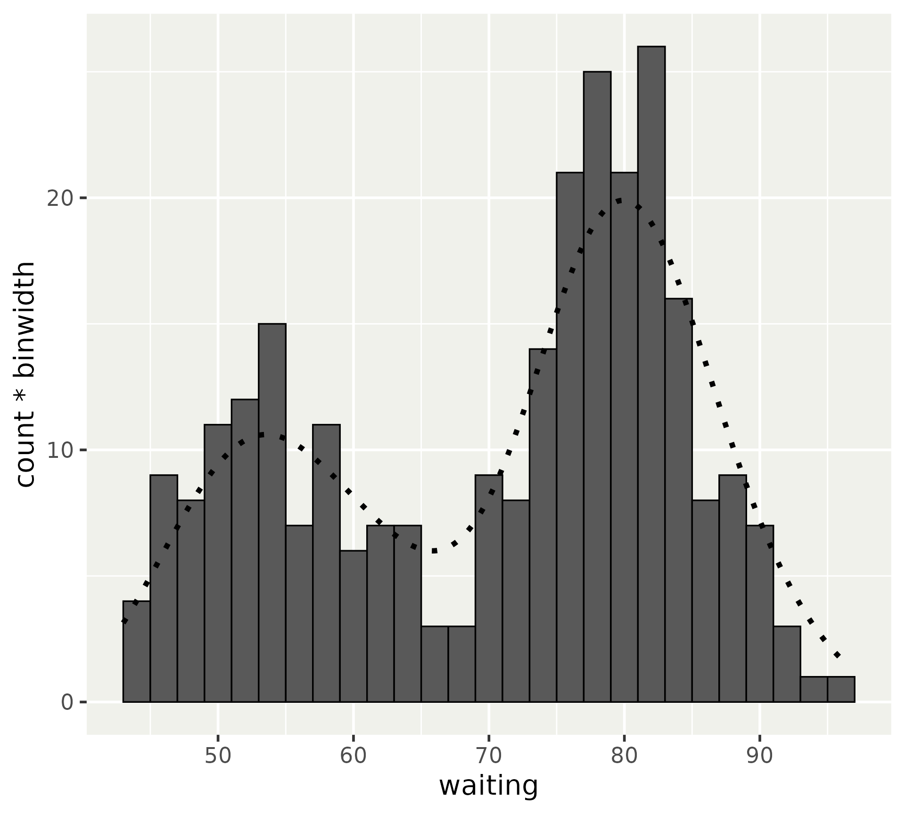
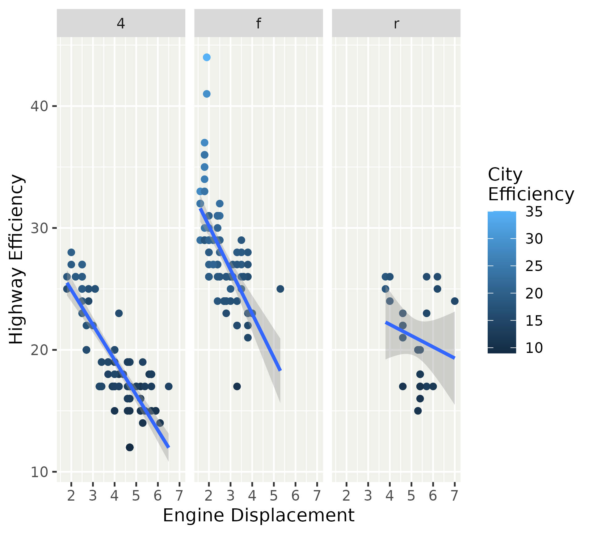

Styling your plot
The theme menu
- Ink & Paper
- Default palettes
- Build your own theme
- Custom guides
Ink & Paper
- Complete themes
- Geom element
- Use in layers
Complete themes
library(ggplot2)
p <- ggplot(mpg) +
aes(displ, hwy) +
geom_point() +
geom_smooth(
aes(displ, hwy),
formula = y ~ x, method = "lm",
inherit.aes = FALSE
) +
facet_wrap(~ drv) +
labs(dictionary = c(
cty = "City\nEfficiency",
hwy = "Highway Efficiency",
displ = "Engine Displacement",
year = "Year",
"factor(year)" = "Year",
class = "Class"
))
p
Complete themes
ink affects all foreground elements and parts of layers.
Complete themes
paper affects all background elements and parts of layers.
Complete themes
ink and paper can be combined to recolour a plot.
Complete themes
accent has niche application in geom_smooth() and geom_contour().
Geom elements
theme(geom) accommodates the layer settings
Geom elements
ink/paper/accent act as described for complete themes
element_geom()
## <ggplot2::element_geom>
## @ ink : NULL
## @ paper : NULL
## @ accent : NULL
## @ linewidth : NULL
## @ borderwidth: NULL
## @ linetype : NULL
## @ bordertype : NULL
## @ family : NULL
## @ fontsize : NULL
## @ pointsize : NULL
## @ pointshape : NULL
## @ colour : NULL
## @ fill : NULLGeom elements
For lines, we distinguish borders (of polygons) and ‘naked’ lines.
element_geom()
## <ggplot2::element_geom>
## @ ink : NULL
## @ paper : NULL
## @ accent : NULL
## @ linewidth : NULL
## @ borderwidth: NULL
## @ linetype : NULL
## @ bordertype : NULL
## @ family : NULL
## @ fontsize : NULL
## @ pointsize : NULL
## @ pointshape : NULL
## @ colour : NULL
## @ fill : NULLGeom elements
Illustration of polygon border versus naked line
binwidth <- 2
ggplot(faithful, aes(waiting)) +
geom_histogram(
colour = "black", binwidth = binwidth
) +
geom_density(
aes(y = after_stat(count * binwidth))
) +
theme(geom = element_geom(
# Affects histogram
borderwidth = 0.3,
bordertype = "solid",
# Affects density line
linewidth = 1,
linetype = "dotted"
))
Geom elements
For text, we can set family and fontsize
element_geom()
## <ggplot2::element_geom>
## @ ink : NULL
## @ paper : NULL
## @ accent : NULL
## @ linewidth : NULL
## @ borderwidth: NULL
## @ linetype : NULL
## @ bordertype : NULL
## @ family : NULL
## @ fontsize : NULL
## @ pointsize : NULL
## @ pointshape : NULL
## @ colour : NULL
## @ fill : NULLGeom elements
For text, we can set family and fontsize
Geom elements
For points, we can set pointsize and pointshape
element_geom()
## <ggplot2::element_geom>
## @ ink : NULL
## @ paper : NULL
## @ accent : NULL
## @ linewidth : NULL
## @ borderwidth: NULL
## @ linetype : NULL
## @ bordertype : NULL
## @ family : NULL
## @ fontsize : NULL
## @ pointsize : NULL
## @ pointshape : NULL
## @ colour : NULL
## @ fill : NULLGeom elements
For points, we can set pointsize and pointshape
Geom elements
There is also the familiar colour and fill.
element_geom()
## <ggplot2::element_geom>
## @ ink : NULL
## @ paper : NULL
## @ accent : NULL
## @ linewidth : NULL
## @ borderwidth: NULL
## @ linetype : NULL
## @ bordertype : NULL
## @ family : NULL
## @ fontsize : NULL
## @ pointsize : NULL
## @ pointshape : NULL
## @ colour : NULL
## @ fill : NULLGeom elements
colour and fill are direct, but indiscriminate. Note how accent is now ignored.
Geom elements
colour and fill are designed to tailor for individual geom types.
Ink & Paper: summary
- Complete themes can be used to coordinate a colour scheme quickly.
theme_complete(ink, paper, accent)
- Most layer defaults can be set in the theme.
theme(geom = element_geom(...))
Exercise 4.1
03:00
Default palettes
Several ways to set a plot’s colour palette
- Directly add a scale
+ scale_colour_gradientn()- Not set as default scale
- Using esoteric options
options(ggplot2.continuous.colour = scale_colour_gradientn)- Arcane
- Overriding default scale
scale_colour_continuous <- scale_colour_gradientn- Messes with namespace
- NEW: via
theme()
Controlling palettes
A tour through various options
my_palette <- hcl.colors(15, "sunset")
custom_scale <- function(...) {
scale_colour_gradientn(colours = my_palette, ...)
}
p2 <- p + aes(colour = cty)
# 1. Directly set a scale
p2 + scale_colour_gradientn(colors = my_palette)
# 2. Using options
options(ggplot2.continuous.colour = custom_scale)
p2
options(ggplot2.continuous.colour = NULL) # reset
# 3. Redefine scale
scale_colour_continuous <- custom_scale
p2
scale_colour_continuous <- ggplot2::scale_colour_continuous # reset
# 4. Using theme
p2 + theme(palette.colour.continuous = my_palette)Controlling palettes
Regular scales override theme defaults
Controlling palettes
The default palette does not commit to a full scale. You can still tweak the options via the default scales (scale_{aesthetic}_{type}).
Theme palettes
The palette settings have the syntax palette.{aesthetic}.{type}, where type can be "continuous" or "discrete".
Palette input
The palatable palettes are those that can pass through scales::as_continuous_pal() and scales::as_discrete_pal() respectively.
library(scales)
# Discrete palettes
pal <- as_discrete_pal(c("foo", "bar", "qux"))
pal(2)
## [1] "foo" "bar"
palette_type(pal)
## [1] "character"
palette_nlevels(pal)
## [1] 3
# Colours as continuous palette
pal <- as_continuous_pal(c("magenta", "green"))
pal(c(0, 0.5, 1))
## [1] "#FF00FF" "#C9B2A2" "#00FF00"
palette_type(pal)
## [1] "colour"Palette input
With the right metadata, we can interchange discrete and continuous palettes.
Palette input
Just because we can swap discrete and continuous palettes, doesn’t mean we should!
Default palettes: summary
- New theme arguments to set default palettes:
palette.{aes}.{type}. - Input for discrete palettes
scales::as_discrete_palette(). - Input for continuous palettes
scales::as_continuous_palette().
Exercise 4.2
03:00
Build your own theme
How do you intend to use a personal theme?
- Complete theme
- Partial theme
Building a complete theme
Capture your theme as a function.
Building a complete theme
Start with using a complete theme as base.
Building a complete theme
Build your own customisations on top.
Building a complete theme
For custom fonts, put in guardrails for their possible absence.
Building a complete theme
You can coordinate the ink/paper/accent settings, along with the geom argument.
my_theme <- function(
...,
ink = "hotpink",
accent = "black",
header_family = "Dancing Script"
) {
systemfonts::require_font(header_family)
theme_gray(..., ink = ink, accent = accent, header_family = header_family) +
theme(
geom = element_geom(pointshape = "♥", pointsize = 3),
axis.line = element_line(),
strip.background = element_blank()
)
}
p + my_theme()Building a complete theme
If you have flamboyant ink or paper colours, you may also want to direct the palette.colour.continuous and palette.colour.discrete palettes.
my_theme <- function(
...,
ink = "hotpink",
accent = "black",
header_family = "Dancing Script"
) {
systemfonts::require_font(header_family)
theme_gray(..., ink = ink, accent = accent, header_family = header_family) +
theme(
geom = element_geom(pointshape = "♥", pointsize = 3),
axis.line = element_line(),
strip.background = element_blank(),
palette.colour.continuous = c("hotpink", "pink", "white")
)
}
p2 + my_theme()Building a complete theme
You can activate your theme for all plots in your document by using set_theme().

Building a complete theme
But for now, we’ll reset it to something familiar.
Building a partial theme
For individual plots, the same advice holds for building a theme function.
However, you can have partial theme ‘shortcuts’.
Building a partial theme
You still call a theme() or theme_sub() function to initiate a fresh, (incomplete) theme. No need to start with a complete theme base.
Building your own theme: summary
- Implement as function.
- Use complete theme as basis
- Add on your tweaks
- (Guard custom fonts)
- (Coordinate colour & palettes)
Exercise 4.3
05:00
Custom guides
ggplot2 has more guides than colour bars and legends.
- axes
- colour bar
- colour steps
- legend
- binned guide
Base guides
A guide can be specified in guides() or in the scale_*(guide) argument.
Styling guides
Guides can have their own local themes for customisation.

Guide extensions
Specialised guides for niche applications, like periodical data.
Guide extensions
Guides can be specified flexibly to at least the degree of secondary axes.
# Translate Celsius range to Fahrenheit
deg_C <- range(pressure$temperature)
deg_F <- (deg_C * 9 / 5) + 32
# Compute breaks and translate back to Celsius
deg_F <- scales::extended_breaks()(deg_F)
deg_C <- (deg_F - 32) * 5 / 9
fahrenheit_axis <- guide_axis_base(
key = key_manual(aesthetic = deg_C, label = deg_F)
)
p3 <- ggplot(pressure) +
aes(temperature, pressure) +
geom_line() +
theme(axis.line.x = element_line())
p3 + guides(x.sec = fahrenheit_axis)Guide extensions
In addition, many guides can be composed like stacking the Celsius and Fahrenheit guide.

Guide extensions
legendry has re-imagined some guides as compositions.
Guide extensions
Aside from composability, re-imagined guides come with extra features.
Guide extensions
Aside from composability, re-imagined guides come with extra features.
Custom guides: summary
- Guides give your plots meaning
- Guides can have local themes for individually tweaking them
- Guide extensions, such as those in the legendry package, expand your arsenal.
Exercise 4.4
03:00
Next session: Plot composition